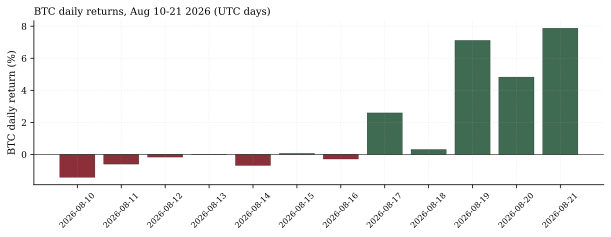
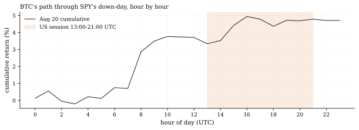

The one-paragraph version. Across the three complete UTC days to Aug 21, BTC compounded +21.1% (+7.12%, +4.83%, +7.88%) to $78,409.4 — while SPY slipped just −0.23% over the same span, closing Aug 20 at −1.96% below its Aug-13 high before bouncing +0.41% on Aug 21. That is a break from BTC's own 2026 regime: on the year's 75 SPY-down days, BTC averaged −0.97% and closed negative 65.3% of the time, with a down-day beta of 1.62 versus 1.20 on up days. BTC now sits +13.6% above its 200-day mean ($69,012) — and the desk's standing "BTC reclaims the 200-day mean" call is already satisfied in-window: BTC stood 6.41% below the 200-day mean (as then computed) at the call's 00:00 UTC issuance snapshot on Aug 19, was +0.44% above it by the same UTC day's close, and every close since has been higher still — formal grading lands at the call's 120-session deadline.
How we worked this problem
The desk's crypto thesis all year has been "one beta in eight wrappers" — BTC amplifies SPY, especially on down days. A 3-day divergence of this size (+21.1% against a −0.97% down-day mean) demands a re-test against fresh data: measure the event (OKX hourly through the complete Aug-21 UTC day), then re-measure the regime that the event ostensibly broke (every 2026 session, down-day versus up-day conditioning), and read the external tape for mechanism.
The data audit
| # | Source | Coverage | As-of | Notes |
|---|---|---|---|---|
| 1 | OKX 1h BTC/USDT | 66,960 bars, 2019-01-01 → | 2026-08-21 23:00 UTC | Complete Aug-21 day (24 bars) |
| 2 | 16-ETF daily panel (SPY) | 4,940 sessions, 2007-01-03 → | 2026-08-21 | Includes the down-day and the bounce |
BTC "daily" returns are UTC-day closes from the hourly book; Aug-21 is a complete 24-bar UTC day.
The exhibits
The event. SPY fell −0.84% on Aug 20 (close $762.60), then bounced +0.41% on Aug 21. BTC rose +7.12% the day before the dip, +4.83% on the down-day itself (close $72,683.1), and +7.88% on the complete Aug-21 UTC day — +21.1% compounded over the three UTC days, against SPY's −0.23% for the matching span. Through SPY's US session on the down-day (13:00–21:00 UTC), BTC accumulated +0.98%, including +0.19% in the 14:00 hour that this desk has shown is crypto's wildest. Realized vol over the trailing 30 days stands at 34.9% annualized — the move is large in price and still not a vol event.

Figure 1 — BTC daily returns, Aug 10-21 2026 (UTC days).

Figure 2 — BTC cumulative return through SPY's Aug-20 down-day, hour by hour (UTC).
The regime it broke. Conditioning every 2026 session on SPY's sign: 75 down days, 85 up days. On down days BTC averaged −0.97% (negative 65.3% of the time); on up days +0.84% (positive 57.6%). Split beta: 1.62 on down days versus 1.20 on up — asymmetry is the regime, with daily correlation 0.43. Three days of +21.1% against a flat equity tape is therefore not noise around that regime: this week holds the two largest 3-day BTC-minus-SPY divergences of 2026 — 21.4 percentage points (the Aug-21 window) and 13.9 percentage points (Aug-20).
The external tape supplies the mechanism. CoinDesk: BTC broke out of the six-week $62,000–$66,900 range that had held since July 8 with roughly $3 billion in short positions liquidated, then pushed past $75,000 for the first time since May. Bloomberg frames it as a record short squeeze that leaves the rally "hunting for real buyers." Reuters attributes the catalyst push to the CLARITY Act and Treasury buyback headlines. Cross-check: CoinDesk's live page printed $77,632.01 at 08:45 UTC; our OKX bar at 11:00 UTC was $77,636.7 — a $4.69 gap across two snapshots — and the day closed at $78,409.4.
So what — opportunities
- The squeeze-fade trade is measurable. Bloomberg's "needs real buyers" framing is a falsifiable structure: squeezes that fail give back the range break. The desk's standing reclaim call prices exactly that.
- The 200-day reclaim is live. BTC +13.6% above its 200-day mean turns the crypto complex from "deep underwater asset" (Recovery Lab) to "above trend" in two sessions — trend-following constructions re-entered on Aug 19 — the first close above the mean since 2025-11-02 — and the move has run from 6.41% below the mean at the call's issuance snapshot to +13.6% now.
So what — risks
- Squeeze-driven rallies invert fast. The $3B liquidation tail is mechanical fuel, not demand; a failure back into the $62,000–$66,900 range would re-impose the old regime at worse prices.
- The down-day asymmetry has not been repealed by three days. Until the up-beta/down-beta gap narrows over weeks, the standing read remains "crypto amplifies equity pain" — this week is the exception demanding evidence, not the new rule.
- The 3-day sample is three sessions. A 21.4-percentage-point divergence in 72 hours is a regime event, not a regime measurement — the asymmetry statistics (75 down days) remain the base rate until weeks of data say otherwise.
Machinery
All numbers: articles/2026-08-21-btc-vs-first-spy-dip/analysis.py → assets/numbers.json. Reproduce: .venv/Scripts/python articles/2026-08-21-btc-vs-first-spy-dip/analysis.py.
Limitations
UTC-day convention for BTC (US-session days differ by 4 hours in August, 5 in winter); Aug-21 is a complete UTC day; down/up conditioning is same-day (no lags); betas are through-origin OLS on daily closes with SPY's close-to-close timing; correlation is Pearson on the same 160 sessions; external mechanism claims are attributed, not measured by the desk; SPY's Aug-21 close is in-panel; BTC's Aug-21 day is UTC-bounded.
Sources — external reading list
| Claim | Source |
|---|---|
| BTC past $75,000, first time since May | CoinDesk, Aug 20 2026 |
| Six-week range break ($62.0k–$66.9k since Jul 8); ~$3B shorts liquidated | CoinDesk, Aug 20 2026 |
| Record short squeeze; rally hunting for real buyers | Bloomberg, Aug 20 2026 |
| CLARITY Act push, Treasury buybacks; BTC crosses $70k first time since June | Reuters, Aug 20 2026 |
| Live print $77,632.01 at 08:45 UTC (cross-check vs house bar) | CoinDesk live price page |
Internal sources: the two lineage rows above. Not investment advice.
OKX 1h bars (through Aug 21 23:00 UTC); down/up-day conditioning; beta split; panel SPY
Work with the desk — allocations, commissions, collaborations: reach the desk on LinkedIn
Never miss an issue — subscribe with the RSS/Atom feed.